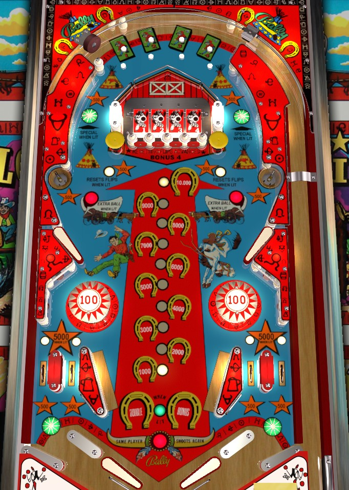

This game is included on The Pinball Primer for the purposes of education and historical completeness only. The Pinball Primer does not uphold or condone the depictions of Native Americans seen in this game's artwork, which may be considered stereotypical or offensive to some.
Keep the ball in the middle 1/3 of the table horizontally at any cost because the in/out lane structure is a spawn of Satan. Use top rollover buttons or center standup targets to flip flags for 1,000 points and a bonus advance each, then hit a mushroom bumper to reset all 4 flags and advance the bonus 4 times. Rinse and repeat this process. At 11,000 base bonus, the saucers will be lit alternately for extra ball; at 19,000 bonus, the star rollovers in the orbits light alternately for special. If you get to this point, congratulations- you've done all there is to do on one of the worst pinball games of all time.
The four flip flag targets can be flipped by pressing a rollover button in the column directly above the flag, or the standup target directly below the flag. These buttons and targets score 100 points by default. Successfully flipping a flag scores 1,000 points and a bonus advance. You do not get the additional 1,000 points if the flag was already flipped; you also do not get the additional 1,000 points if the flip flag is faulty and doesn't actually flip the flag over despite scoring a clean hit, which happens way too much. Once all four flags are flipped, the mushroom bumpers on either side of the center standup targets are lit. These mushroom bumpers score 500 points; if they are lit, they also score 4 bonus advances and reset all four flip flags.
If the bonus reaches 11,000 points or higher, one of the two saucers about 2/3 of the way up the playfield and directly above the upper flippers will be lit for extra ball. If the bonus is maxed at 19,000 points, the star rollover in one of the two orbit shots will be lit for a Special. In each case, the lit award alternates which side of the playfield it is on every time a 500-point switch is scored- typically, this includes the saucers, mushroom bumpers, and in/out lane switches.
Use the upper flippers as much as you can on this game. It's usually possible to get an upper flipper shot in any times the ball comes down either orbit or is ejected from either upper saucer. Keeping the ball occupied in the upper half of the game means you don't have to deal with the nearly impossible task of getting the ball under control in the lower half of the game.
The bottom of the table somewhat resembles that of Viking, where balls coming down the out lanes can be bounced off of a small rubber and into the in lane. The problem is, on Flip Flop, there is no one-way gate helping the ball stay in play, which means balls coming down the out lanes can rattle around and not stay in play, and balls coming down the "in lanes" often just drop directly through the gap and out of play. It's truly horrendous. All in/out lanes score 500 points to start; if the base bonus is advanced to at least 11,000 points, the game will light either both "in" lanes or both out lanes. Lit lanes score 5,000 points. Whether the "in" or out lanes are lit alternates any time a 500-point switch is scored. Star rollovers near the bounce-pad rubbers also score 500 points.
Bonus is only advanced by the flip flag feature: 1 advance for flipping a flag over, 4 advances for resetting the flags after flipping them all over. Max base bonus is 19,000 points. Double bonus is given for free on ball 3 of a 3-ball game, or on balls 3 and 5 of a 5-ball game. There is no skill method for lighting the double bonus. Max bonus is 39,000 points. There is no bonus holdover or mid-ball bonus collect.
Don't play this game.